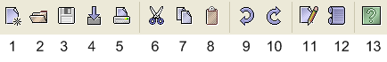

Introduction > Toolbar
The toolbar at the top of the application window provides
shortcuts to commonly used functions.

- New Datasheet: Open a new datasheet in the Datasheet
window.
- Open: Open a saved log if the log window is selected.
Open an existing Datasheet if the datasheet window is selected.
- Save: Save the log window if the log window
is selected. Save the datasheet if the datasheet window is selected.
- Import: Load a built-in datset or one from a web address.
- Print: Print the log window if it is selected. Print
the active datasheet if the datasheet window is selected.
- Cut: Cut.
- Copy: Copy.
- Paste: Paste.
- Undo: Undo.
- Redo: Redo.
- Edit Last Dialog: Bring up the most recently used dialog.
- Dialog History: Show a history of the most recently used
dialog.
- Help: Display the documentation.